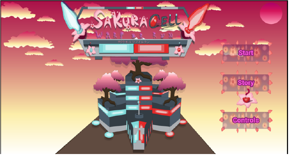
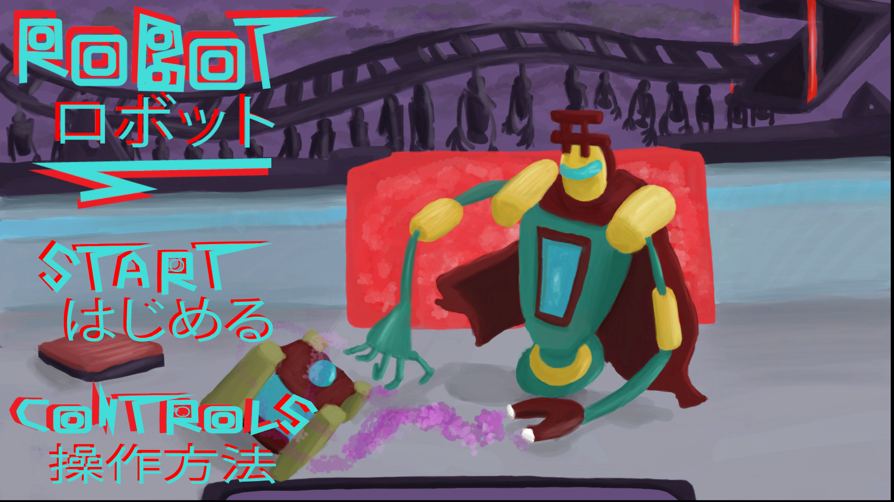

P_Disorder: Level:Yume The Dreamscape (ピーディスオルダー・夢・ザ・ドリームスケープ)

A shooter, where weapons have multiple modes and various functions within the level. I designed and prototyped, two weapons totalling in eight different modes, including enemies and bosses.
Key Notes
2 weapons, Gun and Katana with four different modes per weapon, creating different playstyles and uses.
Bilingual UI.
Designed all gameplay, story progression, mechanics.
I managed to learn more about postprocessing techniques, Level progression, UI, animation, abilties and cutscenes.
Drew desings and modeled all assets and utilised Pb Brushes, experimented with cloth mechanics in blender.
2019/2020
University Projects
Suzaku

I focused primarily on puzzles and level design, the biggest inspirations was the strength mechanic from Pokemon, and The Legend of Zelda style dungeons.
Experimented further with camera cuts similar to Resident Evil/older horror games.
Designed and 3D modeled character
Experimented with particle effects, and implementing Japanese kanji for effects such as "火事" for fire.
Experimented with different surfaces for walking on Ice Gameplay.
Experimented further with physics to manoeuver ice blocks.
Sakura Cell Warp Or Run

An endless runner mixed with a magic system allowing the player to teleport on touch. Focusing primarily on the gameplay & design and creating a mobile game.
Encorporated designs within a game as part of the controls scheme.
Had a system that generates MP (Magic Points) every second, and clamps at the highest value, gaining crystals would increase maximum MP
Experimented with touch screen controls creating different mechanics based on inputs
Experimented with external 2D animation program Dragon Bones.
Robot (ロボット) Skills Development

A two week project focusing on skill development, primarily focusing on camera techniques and physics.
Created characters and environments using Maya. Experimented with materials in Unreal Engine 4
Different camera techniques based on games such as Resident Evil/Devil May Cry
Using colliders and sockets to attach and detach actors to the main protagonist, allowing for level progression.